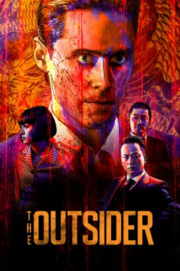

#9557 Outsider, The *OmU*
 gesehen am 14.09.2018
gesehen am 14.09.2018
 
 IMDB-Wertung: 6.3 / 10
IMDB-Wertung: 6.3 / 10  Metascore: 30
Metascore: 30 
An epic set in post-WWII Japan and centered on an American former G.I. who joins the yakuza.
WEBRIP OMU SUBBED
Jahr: 2018
Dauer: 120 Minuten
FSK:
Land: USA Studio: NetflixTonspuren:
Untertitel: Deutsch, Englisch,
Auflösung: 1080p (1920x808) Größe: 2938 MB
Genre: Thriller, Drama, Krimi, Mystery
Regisseur: Martin Zandvliet
Drehbuch: Andrew Baldwin
Soundtrack: Sune Martin
Darsteller:
 Jared Leto als Nick Lowell
Jared Leto als Nick Lowell Tadanobu Asano als Kiyoshi
Tadanobu Asano als Kiyoshi Kippei Shîna als Orochi
Kippei Shîna als Orochi Shioli Kutsuna als Miyu
Shioli Kutsuna als Miyu Emile Hirsch als Paulie Bowers
Emile Hirsch als Paulie Bowers Rory Cochrane als Anthony Panetti
Rory Cochrane als Anthony Panetti- Nao Ohmori als Hiromitsu
 Min Tanaka als Akihiro
Min Tanaka als Akihiro- Gô Jibiki als Eiichi
- Kohji Katoh als Work Gang Guard
- Motokatsu Suzuki als Escort Guard
- Yasushi Takada als Shiromatsu
- Sôtarô als Shiromatsu
- Kentez Asaka als Seizu
- Nozomi de Lencquesaing als Gambling Hall GI
- Keisaku Kimura als Nakabon
- Yurino als Street Prostitute (uncredited)
- Ray Nicholson als American Stock Broker
- Masaki Miura als Kentaro
- Shun Sugata als Prison Warden
- Hiroya Shimizu als Banjo
- Hiro als Satoru
- Young Dais als Takeshi
- Yasushi Fuchikami als Ryo
- Eita Okuno als Ko
- Syodai Hori-Ren als Mitsuda
- Nozomi Fukuda als Bath House Guard
- Yu Tokita als Prison Guard
- Kyo Hirayama als Nick's Solitary Guard
- Kazuhiko Ozaki als Lanky Prisoner
- Akihisa Muramoto als Head Prison Guard
- Mackenzie Sheppard als American Kid
- Akito Hibiki als Kabuki Actor 1
- Yuka Hibiki als Kabuki Actor 2
- Omusubi als Kimura
- Kazuya Tanabe als Japanese Stock Broker
- Chûkichi Kubo als Silk Tailor
- Aima Li als Chinese Prostitute
- Ryû Tominaga als Bouncer
- Taiyo Saito als Young Boy
- Hachizô Hino als New Cell Mate
- Eishin als Shiromatsu
- Shuichiro Masuda als Shiromatsu
- Taku Watanuki als Shiromatsu
- Yûta Kuba als Shiromatsu
- Ryuhei Watabe als Shiromatsu
- Yoji Yamada als Shiromatsu
- Shoichi Honda als Seizu
- Haya Nakazaki als Seizu
- Takayuki Suzuki als Seizu
Datei: X:\2018(N-Z)\Outsider, The OmU (2018, FSK, 1920x808).mkv seit 11.09.2018
Festplatte: HD 2018(G-Z)-2019(A-Z)
 Es gibt insgesamt 172 Filme in der Gruppe '2018(N-Z)'
Es gibt insgesamt 172 Filme in der Gruppe '2018(N-Z)'